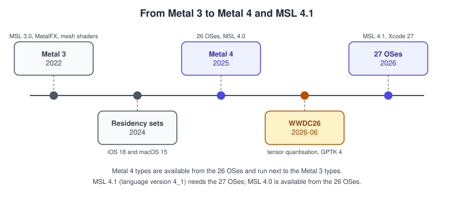
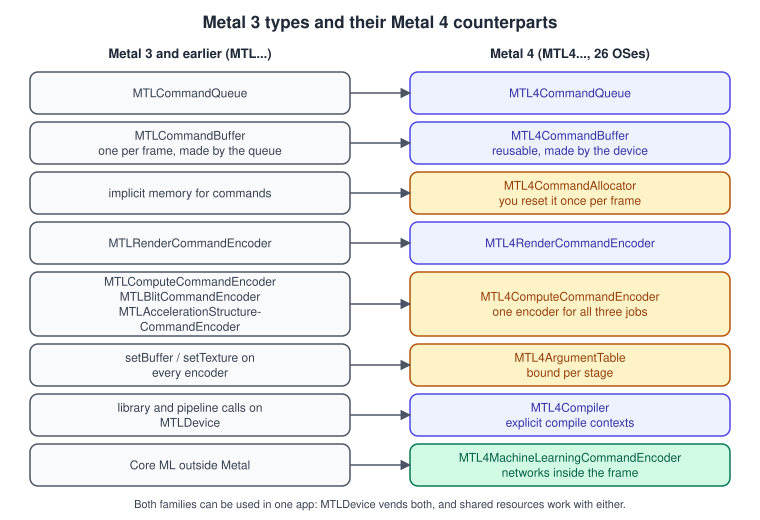
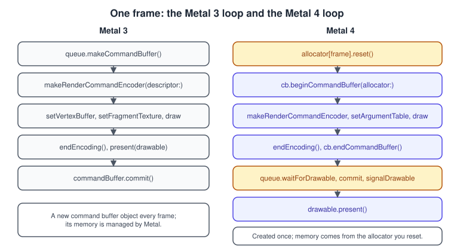
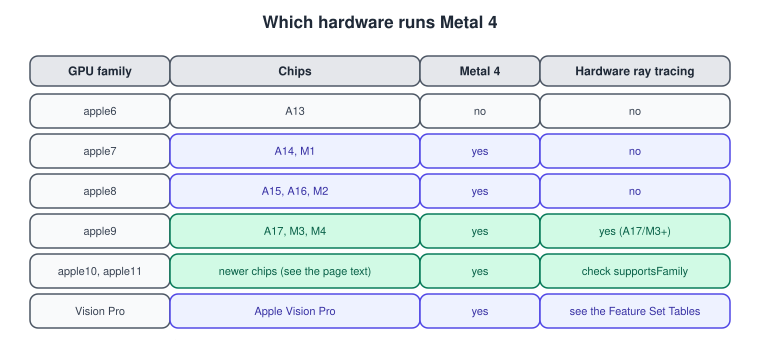

What’s New in Metal 4
|
This content was generated with the assistance of AI and should be verified against the official documentation before being relied on in production. |
Metal is Apple’s low-level graphics and compute API. Since 2014 it has grown in steps, and the biggest step since the first release is Metal 4, announced at WWDC25 and shipped with the 26 operating systems. It keeps what made Metal pleasant (one device, a few object types, a shading language that is C++) and rebuilds the part that costs CPU time every frame: how commands are recorded, how resources are made visible to the GPU, how shaders are compiled and how machine-learning networks run next to graphics. This page is the map of what is new. The pages that follow use the new API in detail, and the old one only where it is still the better answer.
The general concepts behind this page are in History of Real-Time Graphics.
The facts were checked in November 2026. The versions documented are Metal 4 (available from iOS, iPadOS, macOS, tvOS and
visionOS 26.0), MSL 4.1 (the Metal Shading Language version available from the 27 OSes, MTLLanguageVersion.version4_1; 4.0
is available from the 26 OSes) and Xcode 27 with the 27 SDKs. Metal 4 needs an A14 Bionic or later (iPhone, iPad, Apple TV), a Mac
with Apple silicon (M1 or later) or Apple Vision Pro. Xcode 27 itself needs an Apple-silicon Mac running macOS 26.6 or later,
which is why this section assumes one. Setting the toolchain up is the subject of
Setup: Xcode and the Project.
In the running example, the Metal Bookshelf, this page is the starting point: the app is a multiplatform SwiftUI application
that hosts an MTKView, takes the Metal 4 path when the device supports it and falls back to Metal 3 otherwise, and has a
visionOS target. Every later page says which of the two paths it shows. The two paths are described below so that the choice is clear before
the first triangle (Hello Triangle with Metal 4).
The timeline

| Date | What shipped | Why it matters |
|---|---|---|
2022 (iOS 16, macOS 13) |
Metal 3: MetalFX upscaling, fast resource loading with |
The base that most existing code and the 4th edition of Metal by Tutorials (MBT) are written for. |
2024 (iOS 18, macOS 15) |
|
In Metal 4 residency sets are the normal mechanism, not an optimisation. |
2025 (26 OSes, WWDC25) |
Metal 4: the |
Rebuilds command encoding, binding, compilation and synchronisation. |
June 2026 (WWDC26) |
Quantised tensor formats, support for the Neural Accelerators of the M5 Pro and M5 Max, MetalFX neural upscaling and denoising, Game Porting Toolkit 4, the command-line tools |
Machine learning becomes a first-class part of a frame; the debugging tools become scriptable. |
Autumn 2026 (27 OSes, Xcode 27) |
MSL 4.1 ( |
The Intel-era Mac concepts are removed from the recommended path. |
Why a new core API
The Metal 3 recording model was designed for the first iPhones. Every frame the app asks the queue for a new
MTLCommandBuffer, records one or more encoders, binds buffers and textures to each encoder one call at a time, and commits. Metal
tracked resource hazards and residency for you. That is convenient and it costs CPU: the per-call binding, the allocation of a fresh command
buffer and the automatic tracking all happen on the thread that is trying to feed the GPU. As scenes grew to hundreds of thousands
of draws, and as games moved to GPU-driven rendering (see
GPU-Driven Rendering and Indirect Command Buffers), the CPU side became the bottleneck.
Metal 4 keeps the same device and the same resources, and changes six things.
-
Reusable command buffers and explicit allocators. A
MTL4CommandBufferis created once from the device, not from a queue. Each frame you callbeginCommandBuffer(allocator:)with anMTL4CommandAllocatorand laterendCommandBuffer(). The allocator provides the memory the commands are recorded into, and you call itsreset()when the GPU has finished with that frame, which marks its memory for reuse. A command buffer does not hold strong references to resources. -
Argument tables. Metal 4 encoders have no methods that bind a single buffer, texture or heap. You fill an
MTL4ArgumentTable(withsetAddress,setResourceandsetSamplerState) and assign it to the stages of an encoder. A table is created from anMTL4ArgumentTableDescriptor, whosemaxBufferBindCountandmaxTextureBindCountfix its capacity. -
Explicit residency. Resources are treated as untracked. You add
MTLResidencySetobjects to the queue or the command buffer, and the drawable’s layer has one of its own, so the GPU may touch exactly what you declared. -
Explicit synchronisation. Because nothing is tracked, you place barriers between passes yourself, for example from the dispatch stage of a compute pass to the fragment stage of a render pass that reads its output. Events (
MTLEvent,MTLSharedEvent) still synchronise queues, the CPU and other devices. The details are in Synchronization and Barriers. -
A separate compiler object.
MTL4Compilercompiles libraries and pipeline states with explicit control of when and on which thread; see Shader Compilation and Pipeline Caching. -
Machine learning in the frame.
MTLTensoris a multidimensional resource, andMTL4MachineLearningCommandEncoderencodes the inference of a Core ML model into a command buffer on the GPU timeline. Inside shaders, tensor operations from the Metal Performance Primitives can be called inline. See Machine Learning in Metal 4.
The type map

The table repeats the figure with the member names that change, so it can be used as a lookup while porting.
| Metal 3 | Metal 4 | What is different |
|---|---|---|
|
|
Created with |
|
|
Created with |
(memory managed by Metal) |
|
Created with |
|
|
No per-resource binding calls and no residency methods. Uses an argument table. Tessellation configuration is gone, and mesh shaders take its place. |
|
|
One encoder does dispatches, copies and acceleration-structure builds, so passes that mix them need fewer encoders and barriers. |
|
|
Bind addresses with |
|
|
Compilation is its own object, with its own queue of work. |
(none) |
|
Runs a Core ML network on the GPU timeline, with |
The frame loop, old and new

The shape of the Metal 4 loop is the one used by Apple’s triangle sample: there are a few frames in flight (the sample uses three), each with its own allocator, and a shared event or semaphore tells the CPU when the GPU is done with a frame so its allocator can be reset.
import Metal
let framesInFlight = 3
final class FrameResources {
let device: MTLDevice
let queue: MTL4CommandQueue
let commandBuffer: MTL4CommandBuffer
let allocators: [MTL4CommandAllocator]
var frameNumber = 0
init?(device: MTLDevice) {
guard let queue = device.makeMTL4CommandQueue(),
let commandBuffer = device.makeCommandBuffer() else { return nil }
var made: [MTL4CommandAllocator] = []
for _ in 0..<framesInFlight {
guard let allocator = device.makeCommandAllocator() else { return nil }
made.append(allocator)
}
self.device = device
self.queue = queue
self.commandBuffer = commandBuffer
self.allocators = made
}
/// Call after the GPU has finished the frame that last used this slot.
func beginFrame() -> MTL4CommandBuffer {
let allocator = allocators[frameNumber % framesInFlight]
allocator.reset() // memory is reused
commandBuffer.beginCommandBuffer(allocator: allocator)
return commandBuffer
}
func endFrame() {
commandBuffer.endCommandBuffer()
// Commit with the queue's commit(_:count:), then signal an event so beginFrame()
// knows when this allocator may be reset again.
frameNumber += 1
}
}Source: Drawing a triangle with Metal 4
Notes on the code:
-
makeMTL4CommandQueue()is a factory method onMTLDevice(newMTL4CommandQueuein Objective-C).makeCommandBuffer()andmakeCommandAllocator()are also methods of the device, which is why a Metal 4 command buffer is not tied to a queue when created. -
The allocator and the command buffer are cheap to keep. The cost that this design removes is the allocation of a new command buffer and its memory every frame.
-
Do not call
reset()while the GPU still reads from the allocator’s memory. This is the new way to crash a frame loop: with Metal 3 the framework kept the memory alive for you. -
The complete render pass (descriptor, pipeline state, argument table, drawable handling) is the subject of Hello Triangle with Metal 4.
Incremental adoption
Metal 4 types can be adopted one at a time, next to the older ones. A MTLDevice creates both kinds of queue, resources
(MTLBuffer, MTLTexture, heaps) are the same objects in both worlds, and the two models can even share work through
events. Apple’s guidance is to move piece by piece, and the order below is the one the Bookshelf follows.
The decision is made once, at start-up, and chooses an implementation of a small renderer protocol. The code below is the selection logic used by the Bookshelf, including the language version for runtime-compiled shaders.
import Metal
enum Backend { case metal4, metal3 }
func selectBackend(for device: MTLDevice) -> Backend {
if #available(iOS 26.0, macOS 26.0, tvOS 26.0, visionOS 26.0, *),
device.supportsFamily(.metal4) {
return .metal4
}
return .metal3
}
/// Compile options for source-compiled shaders (rare; the default library is precompiled).
func makeCompileOptions() -> MTLCompileOptions {
let options = MTLCompileOptions()
if #available(iOS 27.0, macOS 27.0, tvOS 27.0, visionOS 27.0, *) {
options.languageVersion = .version4_1
} else if #available(iOS 26.0, macOS 26.0, tvOS 26.0, visionOS 26.0, *) {
options.languageVersion = .version4_0
} else {
options.languageVersion = .version3_2
}
return options
}
guard let device = MTLCreateSystemDefaultDevice() else { fatalError("Metal is not available") }
print("Backend:", selectBackend(for: device))Source: MTLGPUFamily; MTLLanguageVersion
Common mistakes when adopting:
-
Testing only the OS version. An OS 26 device with an older GPU can fail
supportsFamily(.metal4); always ask the device. -
Mixing the two models inside one pass. An
MTL4RenderCommandEncoderis recorded on anMTL4CommandBufferand aMTLRenderCommandEncoderon anMTLCommandBuffer. Share resources and events between them, not encoders. -
Forgetting residency. A buffer that is not in a residency set attached to the queue or command buffer may not be resident when the GPU reads it. Add the long-lived set once and call
commit()on it after changing its contents. -
Resetting an allocator too early. Tie
reset()to a completion event of the frame that last used the allocator.
Performance note: the benefit of Metal 4 is mostly on the CPU side. A scene that is already limited by shading will not become faster only by changing the API; use Debugging and Profiling to see which side is the limit.
Hardware

MTLGPUFamily names the feature families, and supportsFamily(_:) is the way to query them (it replaced the old MTLFeatureSet
enumeration, which is deprecated since iOS 16 and macOS 13). The Apple families map to chips as follows.
| Family | Chips |
|---|---|
|
A14 and M1 |
|
A15, A16 and M2 |
|
A17, M3 and M4 |
|
Newer chips. Use |
|
Capability families that are independent of the chip generation: they say which API generation the device supports. |
The older common1 to common3, mac1, mac2 and Mac Catalyst families are deprecated. Hardware ray tracing needs an A17 or M3
and later (see Ray Tracing), and the Neural Accelerators that WWDC26 added to the
machine-learning story are in the M5 Pro and M5 Max. The Feature Set Tables PDF (dated October 2026) lists limits such as the
maximum threadgroup size per family.
Source: Metal Feature Set Tables
What WWDC26 added
-
Quantised tensor formats and scale factors, so quantised weights can be expressed directly, and native support in the Metal Performance Primitives for compressing model weights. The accompanying session is "Optimize custom ML operations with Metal tensors".
-
MetalFX: a redesigned temporal upscaler that uses both the Neural Engine and the Neural Accelerators on the M5 Pro and M5 Max, reconstructing detail from lower render resolutions; subrectangle processing for dynamic resolution; motion vectors as direct input; and distortion fields for post-process effects. See MetalFX Upscaling and Frame Interpolation.
-
Game Porting Toolkit 4, with a companion repository that provides skills and sample code for working with coding agents; see metal-cpp and Game Porting.
-
Command-line tools
gpucapture,gpudebugandmetalperftracefor capture, inspection and tracing without opening Xcode.
Source: What’s new in Metal; Metal developer tools
Deprecated or replaced
| Old | Status | Use instead |
|---|---|---|
|
Deprecated since iOS 16 and macOS 13 |
|
|
Deprecated since iOS 17 and macOS 14 |
Hardware ray tracing with acceleration structures |
PVRTC texture formats |
Deprecated since iOS 18 and macOS 15 |
ASTC (or BC on Mac) |
OpenGL and OpenGL ES |
Deprecated since iOS 12 and macOS 10.14 |
Metal; see Migrating from OpenGL |
|
Deprecated in the 27 OSes ("has no effect on Apple Silicon") |
|
|
Deprecated in the 27 OSes |
|
With macOS 27 as a deployment target, ARCHS_STANDARD no longer includes x86_64, so new Mac builds are Apple-silicon only. Still current
and not deprecated: MTKView, MTLArgumentEncoder, MTLResidencySet, CAMetalDisplayLink (iOS 17 and macOS 14), mesh pipelines and
MTLIOCommandQueue.
Source: MTLStorageMode.managed
Where the books are outdated
| Book | Statement | Today |
|---|---|---|
MBT introduction |
Metal 3 (2022) is the latest version |
Metal 4 (26 OSes, 2025) and MSL 4.1 (27 OSes, 2026). The 5th edition of the book (November 2025) moves to Swift 6 and the 26 SDKs but still teaches Metal 3. |
MBT "What you need" |
macOS 14, Xcode 15, and every Mac since 2012 runs Metal |
Xcode 27 needs an Apple-silicon Mac on macOS 26.6 or later; Metal 4 needs an M1 or A14. |
MBT chapters 1 to 3 onward |
A new |
Reusable |
MBT chapters 25 and 26 |
|
Writing |
Metal Programming Guide (CLA), throughout |
Swift 4, Xcode 9, |
|
CLA (overall) |
An A7 baseline |
Metal 4 needs an A14 or an M1; Xcode 27 debugs iOS 17 and later devices. |
The full list of corrections, page by page, is spread over the pages of this section, each next to the concept it corrects.
A first look at the Metal 4 pieces in the Bookshelf
Before the sequence of pages begins, here is what the finished renderer contains, as a checklist you can come back to.
-
A
MTL4CommandQueue, one reusableMTL4CommandBufferand three allocators (this page). -
An
MTL4ArgumentTableper stage that needs resources, and a residency set for the shelf, the books and the textures (Argument Buffers and Bindless). -
Pipeline states built through an
MTL4Compiler, with a binary archive for fast launch. -
Barriers between the shadow pass, the main pass and the compute pass that animates the dust particles.
-
On supported hardware, an upscaler between the main pass and the UI pass.
-
The Metal 3 renderer implementing the same protocol for older devices, selected as shown above.